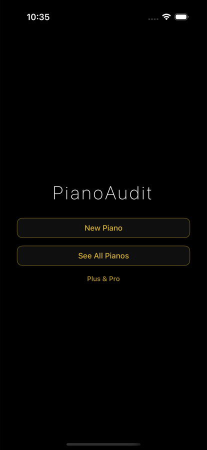
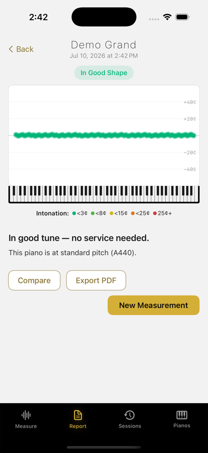
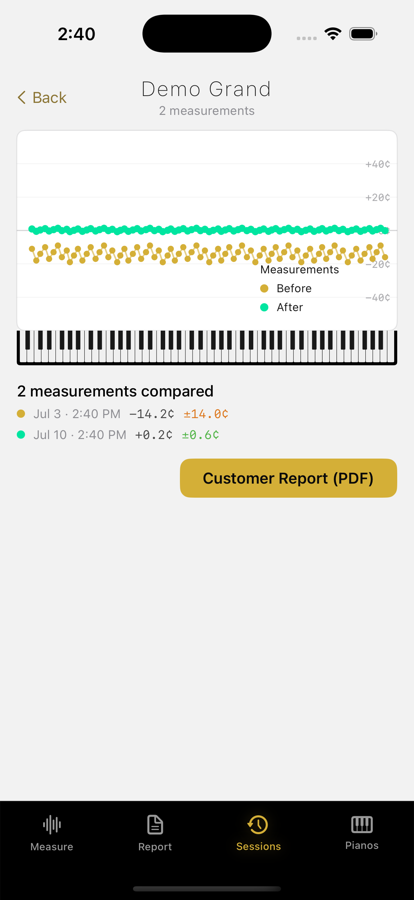
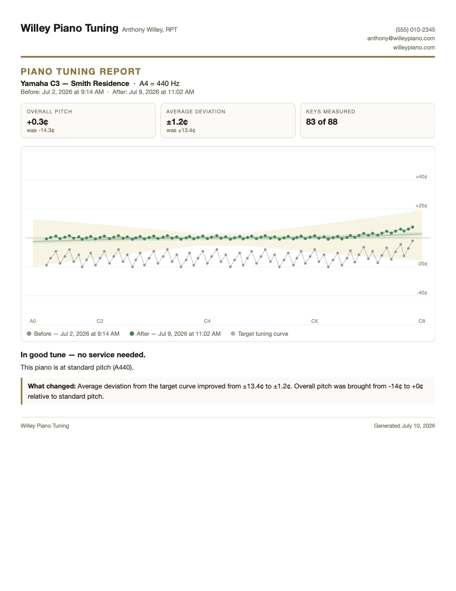

PianoAudit listens while you play every key, maps your piano against its ideal tuning curve, and answers in plain language — from “in good tune” to “this needs a pitch raise.”
No account, no ads, nothing leaves your device. Play the keys; PianoAudit does the rest.
Real-time pitch measurement built for pianos — inharmonicity and all. Watch each key land on the graph as you play it.
Your piano against its own ideal stretch curve, with the acceptable band drawn in. Pinch to zoom into any register.
“In good tune — no service needed.” “A pitch raise plus tuning is recommended.” Plain language, backed by the numbers.



PianoAudit Pro turns the measurement you'd take anyway into a customer deliverable: a one-page before/after tuning report with your business name on it, ready to send minutes after the appointment. Document the work, justify the pitch raise, build trust — whatever ETD you tune with.

The free version is a complete diagnostic — measure a piano, understand it, share a report. Paid tiers add memory, comparison, and the professional workflow.